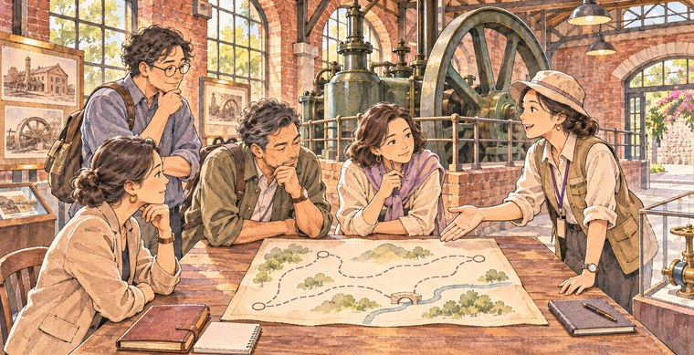

HSP-27 · 虛構水務文化遺產中心 · 15–20分鐘 · 文化遺產詮釋 · 參觀路線編排 · 訪客學習
三個地標，還是一個連貫的故事？

一條路線的好壞，不只看站數
美國國家公園管理局的詮釋規劃指引，以重要觀念和期望訪客獲得的體驗為出發點，而不要求逐一介紹所有展品。ICOMOS的詮釋憲章主張把文化遺產放在更廣闊的社會和歷史背景中理解。兩者都沒有訂出一個放諸四海皆準的最佳站數。
德薩斯州歷史委員會（Texas Historical Commission）的指引區分詮釋主題與題目清單。GEM更新後的學習成果框架涵蓋對不同題目之間關聯的理解；NPS的無障礙指引則把無障礙需要納入規劃。以下虛構情境的選擇參考了這些原則，但個案的時間安排、地方歷史和學習成果並非由這些原則確立。
課堂決定
虛構的課堂情境。 一所水務文化遺產中心正為一個成人團體安排導賞，時間為10:00至11:30，以中心為起點和終點。兩個方案的導賞員、收費、人手配置、無障礙通道及詮釋支援均相同。團體全程一起行動。中心的十分鐘迎賓環節包括五分鐘坐下休息，十五分鐘總結環節亦包括五分鐘坐下休息。兩個環節均不得縮短，沿途也不得加快步速。
附近有三個地標：Pump House、Homes Gallery和Clock Tower。Pump House介紹抽水技術；Homes Gallery展示家用運水用具，以及哪些住戶接駁了供水管道的證據。Clock Tower的建築別具特色，也是熱門拍照地點，但沒有提供關於供水機會的額外證據。此處所有名稱、物件和歷史關係均屬虛構。
「地標精選」路線在三個地標各逗留十分鐘，路程共35分鐘，加上兩個方案共有的中心環節25分鐘，合共90分鐘。「連貫主題」路線在Homes Gallery和Pump House各逗留二十分鐘，路程共25分鐘，加上同樣的中心環節，亦是90分鐘。原定先到Homes Gallery，再到Pump House，從日常生活談起，然後才介紹機械。
按兩個方案各自的步速行走，兩條路線均安全，並符合團體已確定的無障礙需要。不論往哪個方向，中心與Pump House相距五分鐘路程，Pump House與Homes Gallery相距十分鐘，Homes Gallery與中心亦相距十分鐘。在兩站的環形路線加入Clock Tower，路程會多用十分鐘，另須預留至少十分鐘參觀。沒有更快的路線、額外人手或分組選項。現階段尚未確認團體的具體學習目標，也未確認Pump House當天的開放時段。
| 初步方案 | 地標參觀時間 | 路程／中心環節 | 總計 |
|---|
| 地標精選 · 三個地標 | 3 × 10分鐘 = 30 | 35 + 25分鐘 | 90分鐘 |
| 連貫主題 · 先到Homes Gallery，再到Pump House | 2 × 20分鐘 = 40 | 25 + 25分鐘 | 90分鐘 |
你的決定你會暫時建議哪條路線，為甚麼？在承諾多看地標或以連貫主題串連參觀會帶來更好的體驗之前，你需要向訪客和場地營運方了解甚麼？
第二輪 · 多了一項資料
團體現已確認共同目標：能夠解釋供水系統如何改變家務，以及為何供水機會並不均等。這並不是團員各有偏好、希望分開參觀的情況。在這批虛構藏品中，Pump House展示水可以怎樣輸送；Homes Gallery則說明哪些住戶接駁了供水管道，哪些仍須自行運水。兩組證據必須互相連繫，不能只是各自提到。
教育人員已用相同的支援安排，在類似團體中試行這些活動。這次參觀，每項活動都須在各自的場地連續進行二十分鐘，另須保留原有的迎賓和總結環節。這些是指定的任務要求，並非人人都適用的最短專注時間。中心今天沒有可作等效替代的證據。兩個場地均可容納整個團體。
Pump House只在以下時段開放： 10:15至10:35 ，原因是另有保育檢查。整項二十分鐘的活動必須在這段時間內完成。Homes Gallery和中心全程均可使用。不能延長開放時段、提早開始或稍後折返。原定路程時間維持不變，仍須在11:30結束。
Clock Tower依然有吸引力，但若保留兩項各二十分鐘的活動，再加入這一站便須多花二十分鐘。導賞員可調換參觀次序，先在中心用一條簡短問題帶出主題，再在總結環節把證據串連起來。團隊必須坦白交代所選路線略去哪一站，而不能宣傳會完整參觀三個地標。
你的決定重新編排這次九十分鐘的參觀，列出次序和時間。你會刻意略去甚麼？在開放時段的限制下，你會怎樣把證據串連起來？你又會怎樣檢視團體是否達到共同學習目標，而不把到場當作學會的證明？
如何作出初步選擇
在新資料公布前，若目的是概覽或以地標為重點，「地標精選」有其道理；若目的是深入探討一項關係，「連貫主題」也有其道理。站數多寡本身不能決定哪條路線較好。先問訪客希望理解或體驗甚麼，再確認無障礙安排、時間、證據和營運限制，才作承諾。
「連貫主題」可暫定為：供水基礎設施改變了日常家務，但誰能受惠，取決於誰能取得供水。這是一個可探究的完整論點，而不只是「水」這個題目。具體詮釋仍須以藏品所提供的證據為基礎，並顧及不同住戶的經歷。
可行的修訂次序
選擇「連貫主題」，先到Pump House。 10:00–10:10在中心迎賓及休息；步行五分鐘；10:15–10:35在Pump House進行活動；步行十分鐘；10:45–11:05在Homes Gallery進行活動；步行十分鐘；11:15–11:30在中心總結討論及休息。這樣既保留兩項活動和無障礙支援，又完整配合保育檢查所限的開放時段，並按原定時間結束。
若按原定次序先到Homes Gallery，團體會在10:20抵達，10:40完成活動，到10:50才抵達Pump House，屆時已經關閉。因此，原有次序雖然較易鋪陳故事，卻不可行。調換到訪次序不等於放棄主題的連貫性：看抽水機之前先提出有關住戶的問題，到Homes Gallery再回到這個問題。
這條路線的取捨
略去 Clock Tower的參觀和拍照機會。兩項必須進行的活動佔40分鐘，路程佔25分鐘，中心環節佔25分鐘，已用盡全部90分鐘。若加入Clock Tower，額外十分鐘路程加上十分鐘參觀，總時間便是110分鐘，要到11:50才結束。
略去這一站確實有體驗上的代價：訪客少看一種建築風貌，也少了一次拍攝地標的機會。出發前應說明這項取捨，不要暗示一張可帶走的照片能代替親身參觀。不要靠加快步速、取消休息，或聲稱十分鐘活動足以滿足新的二十分鐘要求，來擠出時間參觀Clock Tower。這項建議是按這個團體的目標和當天的限制作出的，並非一概不宜觀光。
讓訪客看出兩者的關聯
迎賓時先問：不用再自行運水，誰的日常家務會改變？在Pump House，指出哪個機械原理使輸水成為可能。在Homes Gallery，比較已接駁和未接駁供水管道的住戶所留下的證據，區分技術上能夠供水與人人有同等機會取得供水。總結時，請訪客把抽水機的一個特點與住戶所受的一項影響連繫起來，並說明受惠程度不同的一個原因。
使用同一組符合無障礙需要的證據，讓訪客以口述、書寫或在支援下指認作答。這些回應只能用來初步了解訪客是否明白上述關係，並非關乎重大結果的測驗，也不能證明學習成果持久。另行詢問參觀是否有趣、節奏是否合適；解釋正確，不代表參觀各方面都成功。觀察訪客在哪些地方未能把證據連繫起來，再改善不清楚的銜接。
教師說明
先請學生選出一條暫定路線，再提供共同學習目標和開放時段。然後要求學生列出有確切時刻的行程表，而不是只說「早一點去看抽水機」。核對25 + 40 + 25 = 90，並確認若仍先到Homes Gallery，便會在10:50才抵達Pump House，錯過開放時段。若建議不聲不響地取消無障礙支援或休息，就不可行。
本個案有別於HSP-10的社區意見問題，也有別於HSP-20的團體成員偏好不一。這裏，團體希望理解同一項關係，而這個共同學習目標決定了在營運限制下選哪些站、怎樣排列次序。所有場地、藏品、時間表及教育人員的試行結果均屬虛構。公開指引支持的是規劃和評估原則，並未透過實測確立兩站必然比三站更有學習成效的因果關係。
第二輪
團體現已確認共同目標：能夠解釋供水系統如何改變家務，以及為何供水機會並不均等。這並不是團員各有偏好、希望分開參觀的情況。在這批虛構藏品中，Pump House展示水可以怎樣輸送；Homes Gallery則說明哪些住戶接駁了供水管道，哪些仍須自行運水。兩組證據必須互相連繫，不能只是各自提到。
教育人員已用相同的支援安排，在類似團體中試行這些活動。這次參觀，每項活動都須在各自的場地連續進行二十分鐘，另須保留原有的迎賓和總結環節。這些是指定的任務要求，並非人人都適用的最短專注時間。中心今天沒有可作等效替代的證據。兩個場地均可容納整個團體。
Pump House只在以下時段開放： 10:15至10:35 ，原因是另有保育檢查。整項二十分鐘的活動必須在這段時間內完成。Homes Gallery和中心全程均可使用。不能延長開放時段、提早開始或稍後折返。原定路程時間維持不變，仍須在11:30結束。
Clock Tower依然有吸引力，但若保留兩項各二十分鐘的活動，再加入這一站便須多花二十分鐘。導賞員可調換參觀次序，先在中心用一條簡短問題帶出主題，再在總結環節把證據串連起來。團隊必須坦白交代所選路線略去哪一站，而不能宣傳會完整參觀三個地標。
你的決定重新編排這次九十分鐘的參觀，列出次序和時間。你會刻意略去甚麼？在開放時段的限制下，你會怎樣把證據串連起來？你又會怎樣檢視團體是否達到共同學習目標，而不把到場當作學會的證明？